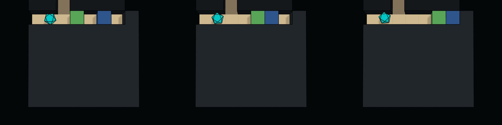
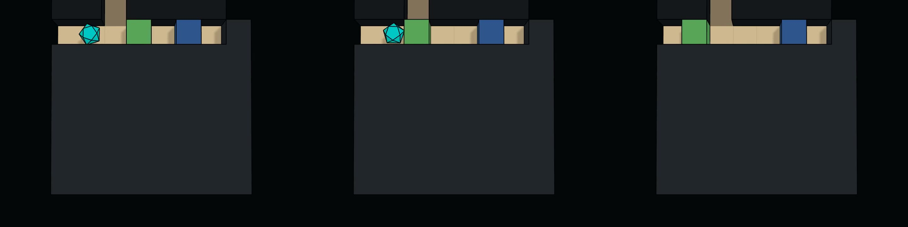
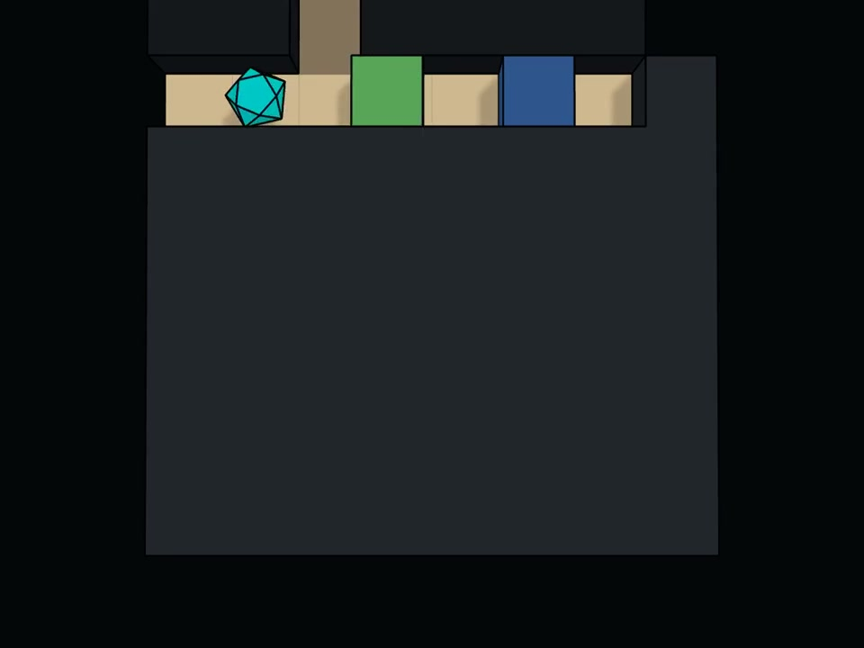
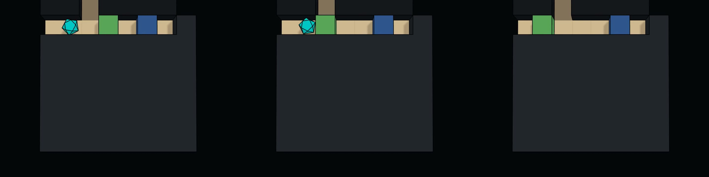

Adding "should be avoided" to a question changed how Qwen used its own answer. It still named the same object, but it stopped treating that object as somewhere to go.
In the previous post, I described Qwen3.8-27B correctly identifying an unrewarding block in MazeBench, then walking toward it. I kept testing because the evidence was clearly available when I asked for it. I wanted to find out what would make that evidence useful in the next decision.
Making avoidance explicit
At the final room, the player stood between two anonymous objects. Earlier actions had pushed object_f without increasing the gem count. Two instances of object_O had disappeared as the count rose.
When I asked which object had moved without reward and later blocked movement, Qwen correctly answered object_f in all 16 runs. Only three then moved toward the gem.
Then I changed the question so that the same answer carried an explicit instruction: which object had moved without reward, blocked movement, and should therefore be avoided? Qwen still answered object_f. This time all 16 continuations approached object_O, the gem.
Adding "should be avoided"
object_f
object_f
This changes how I interpret the earlier failures. Naming the block hadn't inevitably made it a target: the same name could guide Qwen away from it when the question said what to do with that information. Qwen may have struggled to infer avoidance from the negative evidence, or it may have assumed I was asking about the object I wanted it to approach. The wording addresses both possibilities, so it doesn't tell me which was responsible.
I also checked whether the object names were doing the work. In new runs, I swapped them: the gem became object_f and the block became object_O, with the same physical behavior.
The question without an avoidance instruction led to the gem in six of 16 runs. Explicit avoidance led to it in 15. A preference for one particular name couldn't explain the difference.
The gem and block behave the same

Reversing the last movement before the decision gave a less consistent result. Some choices improved and others got worse; the two mirrored layouts changed in opposite directions. Explicit avoidance still led to the gem in 15 of 16 runs. Recent movement may contribute, but repeating the last command doesn't explain the whole failure.
Turning the conclusion into state
Next, I made the intended action explicit outside the question. Keeping the swapped names, I had the runner turn Qwen's answer into a small decision record. It named the unrewarding object as something to avoid and the other candidate as something to approach:
{
"approach_identity": "object_f",
"avoid_identity": "object_O"
}Qwen saw this before choosing its next command. The runner also checked each proposal against a route defined in advance for the room. I saved both the model's proposal and the command actually sent to the game.
All 16 first proposals went toward the gem, before the guard needed to intervene. The first-action response averaged 178 generated tokens, down from 896 when Qwen had to infer what to do from the negative answer.
Plain-language avoidance already got 15 of these 16 choices right. That leaves little basis for claiming the structured record was more accurate. The shorter responses are interesting, though: Qwen could read the target and find its direction instead of reconstructing the history and working out which object to choose.
This wasn't a test of JSON syntax alone. The record supplied a positive target as well as an avoidance instruction, and Qwen was told its commands would be checked. Any of those changes could have contributed.
The right move can still be missing
Across both moves in each route, Qwen returned 29 correct commands in 32 calls. None pointed the wrong way. The other three responses had empty final content, even though their reasoning named the correct direction. All three happened on the second move.
Qwen plans to move left, but sends no command

object_O moved without reward.approach: object_favoid: object_ORaw command: empty
leftEnvironment: gem +1
The guard supplied those missing moves, and all 16 runs collected the gem. It could do that because the route was known in advance. This doesn't show that it could plan in an unfamiliar world, or that the runs would have failed without it. Qwen still had a chance to retry an empty response; I didn't run those unguarded continuations.
Keeping the original proposals made the distinction visible. Qwen's target choices had improved before enforcement. The guard then handled an output failure. Reporting only that every run succeeded would have hidden the three commands the system supplied.
What I'd change in an agent
I think this is worth taking seriously when an agent writes a plan or checks its own work. In these runs, asking for another correct statement wasn't enough. Making the consequence of that statement explicit helped Qwen choose, and checking the actual command caught a failure that its reasoning didn't reveal.
Suppose a coding agent identifies a file that must remain untouched. I'd want that restriction passed to the component that applies edits, where it can reject a write to that file. Asking the model to repeat the restriction would still leave the next command unchecked. I haven't tested coding agents here, but this is the kind of production failure the maze makes me concerned about.
The representation matters at this stage too. The same object name appeared in a factual answer and in an explicit avoidance instruction, with very different results. An agent's interface determines how much it has to infer again on each call. A decision record may reduce that work, especially across a handoff between planning and tool use.
There is a risk in making a decision record authoritative, though. It can be wrong or out of date. In this maze, the answer was correct and there were only two candidates. In a larger system, I'd want the record checked against current observations and permissions that the agent cannot rewrite for itself. Where a replacement action isn't clearly justified, rejecting a proposal or asking for review makes more sense than guessing what the model intended.
For training, I'd keep examples where the model's answer is correct but its next command violates the conclusion. Include cases where the named object should be avoided, and vary the labels and positions so that following a familiar name or direction isn't enough. A useful self-correction should affect the proposed action before a guard has to fix it.
Evaluation should retain the uncorrected proposal as well as the executed action. Otherwise better system-level success can conceal a model that still needs frequent intervention. I'd also separate wrong choices from missing commands: they may produce the same failed task, but the remedies are different.
These are small, selected sets of trajectories from one locally quantized Qwen3.8-27B model. They don't establish reliability on the full benchmark or on production tasks. The reasoning traces help describe the failures, but they aren't a direct view of the computation that caused them.
For an agent whose mistakes are expensive to undo, I'd want explicit decisions and a check on execution. These runs give me a reason to test that design elsewhere, while keeping track of how much work the system is doing for the model.
I used the MazeBench Control Center to branch these runs and inspect what Qwen proposed beside what the game executed. It's open source, and you can use it with your own models.